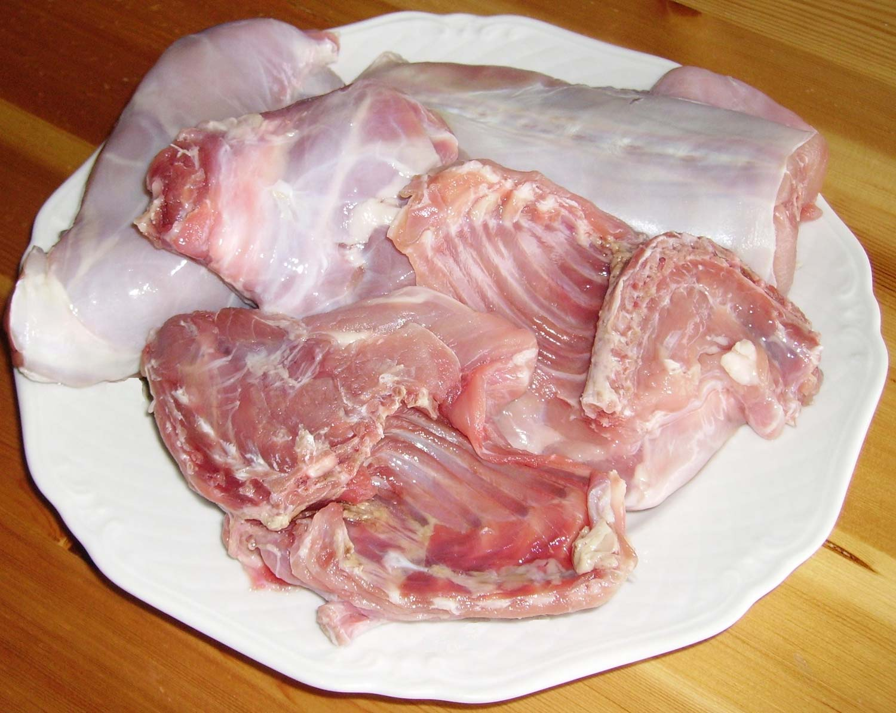
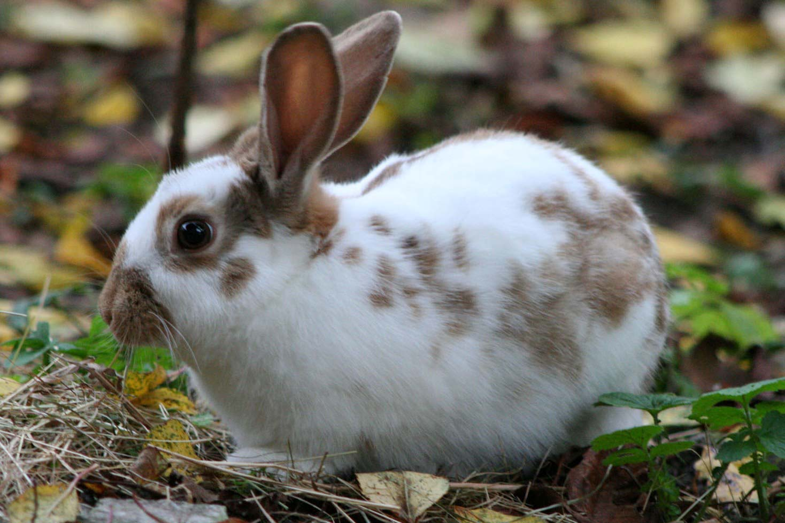
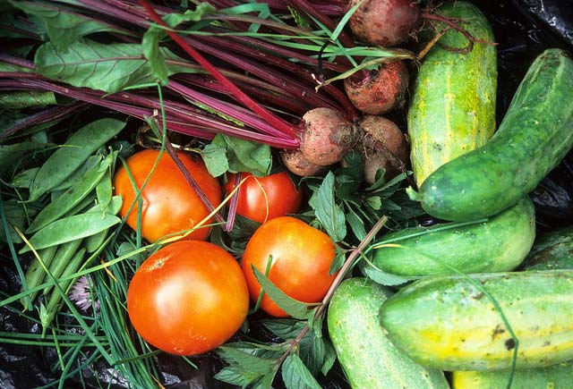
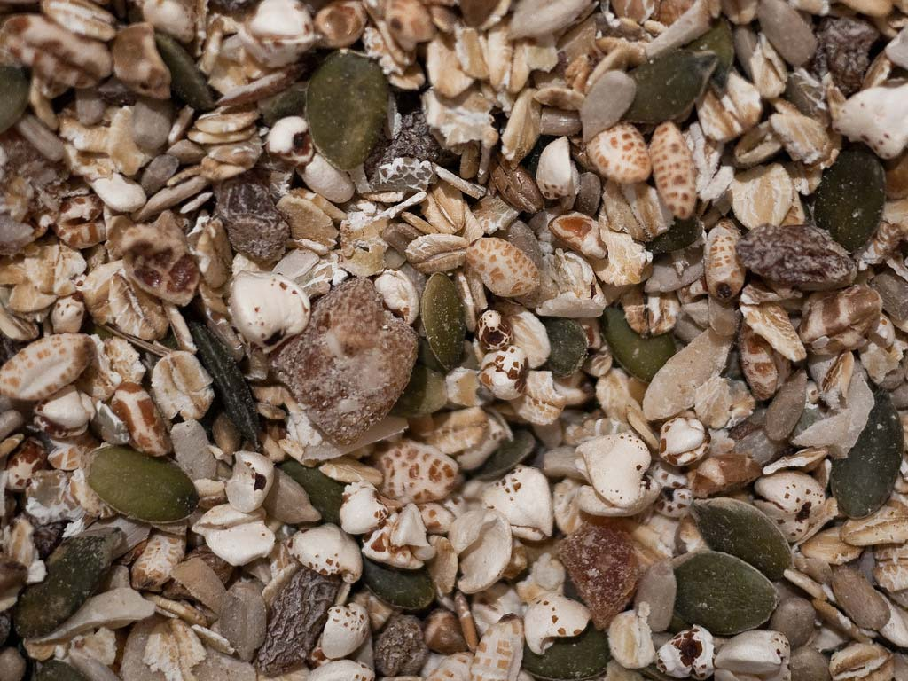

<main role="main" id="main">
    <div class="clear">

        <div class="fleft unit-spacerl unit-l-1-2">
            <h1 id="intro">Rabbit Breeds and Cooking Rabbit&nbsp;Meat</h1>
            <div class="fleft hp unit-m-1-2">
                
            </div>
            <div class="fright unit-m-1-2">
                <p> <strong>Rabbits</strong> are pets and meat. This is a site that was created for the intention of providing people with information about rabbits. The information on this website includes articles on the differentrabbit breeds as well as many recipies to be cooked with rabbit meat.</p>
                <p><a class="unitspacerl button" href="food.html">See Recipies</a></p>
            </div>

            <h3 id="lifespan" class="unitspacerl">Lifespan</h3>
            <div class="fleft hp unit-m-1-2">
                
            </div>
            <div class="fright unit-m-1-2">
                <p>Rabbits live up to 8-12 years depending on if it had been neutered, reducing the risk of cancer in that area. Other factors include living conditions, diet and breed.</p>
            </div>
        </div>

        <div class="fright martop unit-spacerl unit-l-1-2">
            <h3 id="dvm">Pet diet vs Meat&nbsp;Rabbit</h3>
            <div class="fleft hp unit-m-1-2">
                
            </div>
            <p>The domestic rabbit's diet depends on whether it is a pet, a meat or a fur rabbit.</p>
            <p>Meat and fur rabbits need food that will improve meat or fur production and large litters of healthy babies.</p>
            <p>A pet rabbit's diet should be like a wild rabbit's natural diet. Pet rabbits should eat grass hay, leafy green vegetables, and some pellets. You need to feed them a lot of fibre.</p>
                <div class="fleft hp unit-m-1-2">
                    
                </div>
            <p>A diet with too many pellets, root vegetables or sugary fruits can lead to diarrhea, obesity, bad teeth and other health problems.</p>
            <p><a class="unitspacerl button" href="breeds.html">See Breeds</a></p>
        </div>
    </div>
</main>